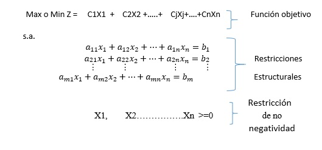

2.2.1 Estructura general de un modelo de programación lineal.
Cuando un modelo de programación matemática tiene las siguientes características se clasifica como un problema de programación lineal: 1) las variables de decisión pueden adoptar valores fraccionarios, 2) estos valores no deben ser negativos, 3) todas las funciones del modelo son lineales en las variables de decisión, y 4) todos los parámetros del modelo son de naturaleza determinística. Si se consideran estas propiedades, la versión general de un problema de programación lineal se puede plantear así: [8].

Elaboración propia
Donde Z es la función objetivo, (X1,…, Xn) son las variables de decisión y tenemos unas restricciones caracterizadas por las desigualdades sobre a11+a12+⋯+a1n. En el caso de la programación lineal, la función objetivo y las restricciones son lineales en las variables de decisión.
Función objetivo: La función que se desea maximizar o minimizar recibe el nombre de función objetivo. El que toma las decisiones desea maximizar los ingresos y las utilidades o reducir al mínimo los costos.
Restricciones: Representan condiciones que es preciso satisfacer. Sistema de igualdades y desigualdades (≤ ó ≥)